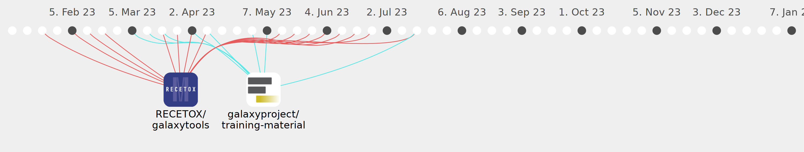

xtrojak

Commits all-time: 391
Commits last year: 174

(122)
- f06ca31
- 7e4b108
- f8d40d1
- 1a6e70f
- 37397b5
- 3d5e21b
- 800a747
- 8dae925
- bf4fbe2
- 6ede7b9
- 3b5fee8
- 27d3598
- 6342a7b
- de8db16
- a0b7f44
- 273fe3f
- a6fa25a
- 16f7dcf
- cedb222
- 9cff77e
- 7edb748
- babbba4
- efc4262
- aee0dd6
- 2c73963
- 4a652de
- 506df2a
- 32b6272
- af15d01
- f92fc10
- 1c9b229
- 585efc5
- a4f8739
- b1e4dec
- 831f1c8
- 9031720
- 00ec627
- 57edafa
- eca26c7
- 79dbadd
- 1dbae52
- c6f3262
- 5901155
- 11e8436
- b77cd9d
- 60a8c95
- 0810a06
- 2c06865
- 9aec621
- 9d46ad1
- 3897f42
- f663c40
- 7a638f6
- c7e8cc1
- 8018dfa
- 7daab5e
- f86d5df
- f6cb0cd
- fed7c4c
- a090bea
- 0773134
- 564c9db
- 686cddf
- f216748
- 3a91c1f
- 8f85832
- 3c3f345
- c636719
- 803d767
- 95c8386
- c735dd2
- 7c3a069
- c8c0e08
- 0768f52
- c10d901
- d83e53a
- 320ee47
- 1865686
- 8566828
- d977336
- a636bee
- 8024d4b
- f4c01f9
- c905d40
- 9921e5e
- 8ae0d70
- ad177ad
- 38f3a22
- cf2be7f
- 933924d
- 28b045f
- ad9f15e
- d8f4722
- bafd33c
- e2efd28
- 3c1afc7
- cb1e281
- e67207c
- b2946aa
- 36f4ff8
- def1c51
- f4d6ddc
- ef73adc
- 76bd233
- fa799fd
- d1ad39e
- 7974373
- e9b4fc4
- 3ad69dc
- bb7b174
- 1f612ee
- 30eb14b
- e315504
- 4d0c02f
- 334df0f
- f1e558e
- 3125565
- 2fbee8a
- 5c50f8e
- bf43a51
- 7927b34
- 4e2a248
(52)
- 1503b93
- 334ba10
- 3a8a045
- 9907deb
- fb498db
- 64b4574
- 3a40771
- ab080fc
- 179e012
- 6b863f8
- cd3beeb
- a8127a0
- 2c70208
- 7e163af
- d575182
- 7732ee6
- 447fb10
- 81df9a6
- 279e20d
- 72cf603
- 1f31d2a
- fd493e4
- f153a80
- d70bca6
- 56fbb4f
- 2b727de
- 3da5de3
- 2e14a10
- fcd889f
- 2e7ebf0
- 14731c6
- 43f0a69
- 7650cef
- e95a233
- 74af30f
- 2887509
- 3c9622e
- f5b4a43
- 41eb746
- a726fb0
- 3907ed5
- 2cfa088
- 25e575a
- 8d68299
- 7e2b8c4
- 09de40f
- 727d060
- 8ddbf6b
- e414cc6
- 9ed3f9e
- 6e117e9
- b13138a